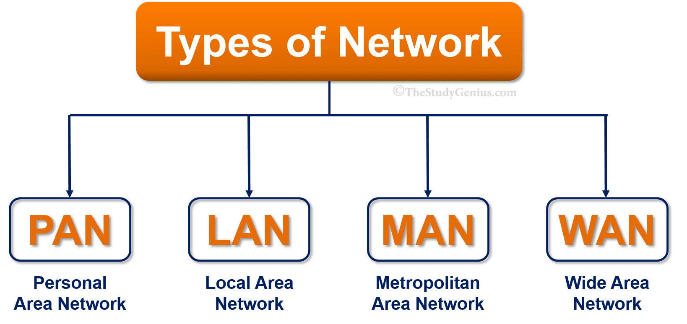
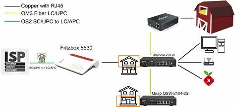
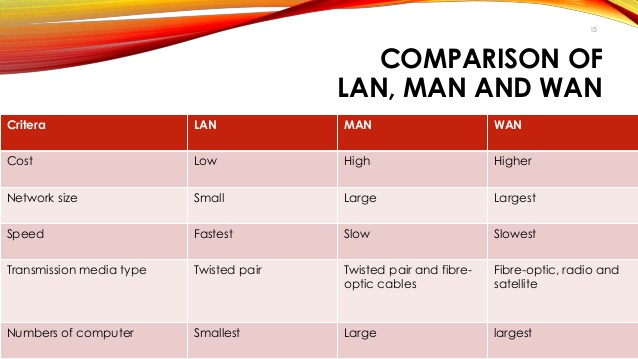
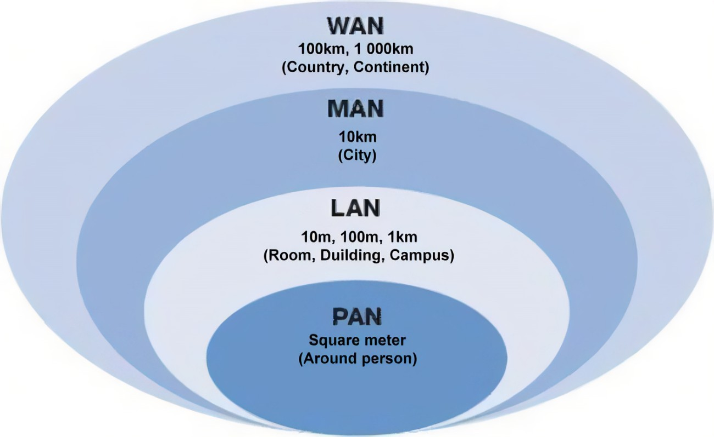

Slide 1 Content
- Networking Basics
- Networking involves connecting multiple devices to share data and resources.
- Networks can be wired (using cables) or wireless (using radio waves).
- Key components include devices like computers, routers, switches, and protocols (e.g., TCP/IP).
- Networks allow for communication, data sharing, and efficient resource utilization.
- Common network models: Client-Server (centralized control) and Peer-to-Peer (decentralized).
- Types of Networks
- LAN (Local Area Network): A network that connects devices within a small geographical area, such as a home, office, or building.
- WAN (Wide Area Network): A network that spans large geographical areas, connecting multiple LANs across cities, countries, or even continents.
- MAN (Metropolitan Area Network): A network that covers a city or large campus, larger than LAN but smaller than WAN.
- Local Area Network (LAN)
- Covers a limited area, typically within a building or campus.
- Provides high data transfer speeds and low latency.
- Common technologies: Ethernet (wired) and Wi-Fi (wireless).
- Used for sharing resources like printers, files, and internet access within a small group.
- Requires devices such as switches, routers, and access points.
- Metro Area Network (MAN)
- Spans across a city or a large campus, larger than a LAN but smaller than a WAN.
- Usually operated by internet service providers (ISPs) or large organizations.
- Used for connecting various LANs within a city or organization.
- Commonly uses fiber-optic cables for high-speed data transmission.
- Wide Area Network (WAN)
- Connects multiple LANs over vast geographical distances, such as cities, countries, or continents.
- Relies on technologies like leased lines, satellites, and VPNs (Virtual Private Networks).
- Provides slower speeds compared to LAN but enables global communication.
- Used by large organizations to connect their branches across different regions.
- The internet itself is a type of WAN.
This is the content for Slide 1. More details can be added here.
Slide 2 Content
    Connect through bluetooth - LAN printer switch vs routerThis is the content for Slide 2. More details can be added here.
Slide 3 Content
This is the content for Slide 3. More details can be added here.
Slide 4 Content
This is the content for Slide 4. More details can be added here.
Slide 5 Content
This is the content for Slide 5. More details can be added here.